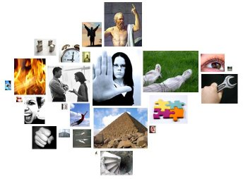

ridcat
Making verbal imagery visible
This idea is based on a psychological technique called Regressive Imagery Analysis. The idea is to analyse a text (especially a therapy session) for emotion-laden words, and note the statistical deviation from the norm. So, supposedly, someone who uses a lot more "anxiety" words than the average Joe is revealing something about his or her inner self.
An online friend started analysing blog posts like this, using bar graphs. I had the idea to try to represent this visually.
Results
I wrote this in 2004, and part of my motivation was to make visible some of the differences in rhetoric between the candidates in the American election. Most of these texts are carefully crafted, so the insight is not into the psyche but into their organizations' tactics.
If you hover over the icons in the large images, in most browsers, you will see a popup description of what they represent. Click on the icons in the large images to go to a summary of all the words in that text that match the category.
George Bush's inaugural speech -- text, and imagery analysis. Note the preponderance of "restraint" images, which seems to be a hallmark of Republicans generally.
Democrats' number one category was "timelessness" -- words like century and forever.
Rudy Giuliani's speech at the Republican National Convention in 2004, text and analysis. The preponderance of "terror" words is very high, but that is of course understandable given recent history. Also, the tool does not consider "security" in its contemporary anti-terrorist meaning.
Barack Obama (text - analysis) and Arnold Schwarzenegger (text - analysis) both talk a lot about dreams. And Obama is the only American politician who seems to include a lot of positive imagery. Perhaps this helps account for his appeal.
The first Bush-Kerry debate produced some interesting results. Much of their discussion was extemporaneous, so we might consider the analysis to be more of an insight into how each man thinks. "North Korea" threw the analysis off, and showed a lot of "cold" imagery for each candidate. But if we disregard "cold", Kerry's top category is "abstraction". (Although, in fairness, both men spend a lot of time asserting their knowledge and expertise.) Disregard "North Korea" and "peninsula" from Bush's utterances, and his strange repetition of "hard, hard work" comes to the fore.
Generally I was disappointed with the results from politics. It seems most American politicians, no matter what their beliefs, converge on a rather generic set of themes. Major exception: in my analyses, Republicans hardly ever mentioned pollution, whereas Democrats did so almost all the time.
And some non-political texts:
Compilation of restaurant reviews from a local magazine: analysis.
Another online friend of mine writes infrequently, but when he does it's usually a well-argued philosophical case. Text / Analysis.
Etcetera
I wanted it to look like a cluster, with an emotional image of the appropriate area to match the size. I settled on a physics-based model. Here's an animation of one of my debugging sessions. In retrospect there are probably better ways to achieve the clustered arrangement, although it was interesting how easy physics became when the universe consisted of non-rotatable rectangles.
{kind=link}
It was incredibly painstaking, but I managed to compile some free images from the Stock Exchange to represent psychological states.
Flaws
The categories are fairly stupid. The dictionary is just a set of globs patterns, so both "hear" and "heart" get counted as "hearing". I used the standard Regressive Imagery categories, without much modification.
In these political texts, "anality" is triggered by mentions of pollution. The icon should really be of a trash pile or something. Or, depending on your political affiliation, you may be happy that a large gluteus maximus represents the speech of most Democrats.
This method doesn't work without a baseline set of statistical norms. The norms I used are based on blog postings, which are as close as any text will come to representing everday speech. (I tried but failed to find a good free corpus of ordinary speech). So the above imagery only shows the difference betweeen a televised political speech, and the average of the ramblings of teenagers and nerdy people. It's a fact: politicians never mention Katamari Damacy.
Using one word from an unusual category can throw the whole thing off.
Arguably this whole theory is bogus, and anything that takes Freudian categories seriously is pretty suspect. But such pretty pictures!
Reactions, press, blogs
"ridcat: an interview with creator Neil Kandalgaonkar", Jeremy Douglass, Writer Response Theory (blog), 18 June 2006.Unless otherwise noted, all content is © 1998-2013 Neil Kandalgaonkar.